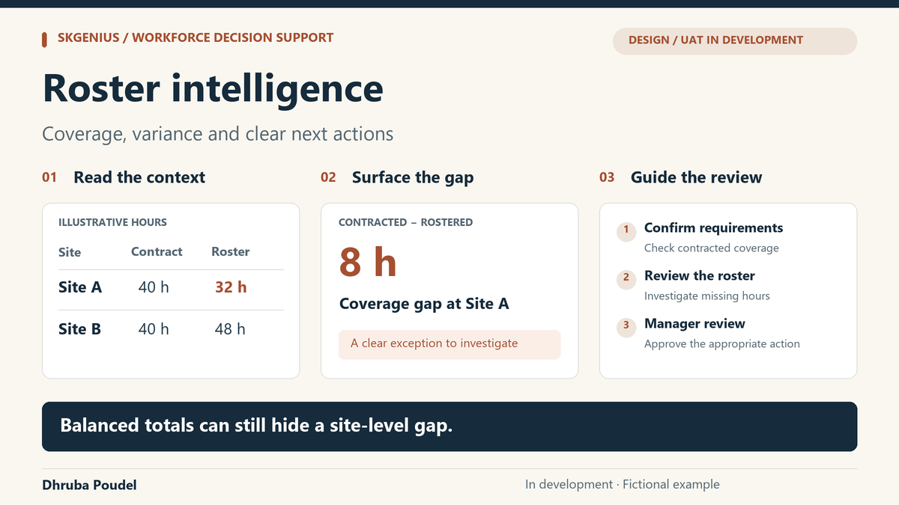

SKGenius · Workforce decision support · In development
Roster intelligence
Find the coverage gap.
Make the next action clear.
- The problem
- A busy roster can show balanced total hours while individual sites still have coverage gaps.
- The design
- Bring variance, coverage exceptions and suggested review steps alongside the roster.
- The next gate
- Validate source-data behaviour, integrated checks and any AI-generated guidance through UAT.

Which exceptions need a manager’s attention?
SKGenius connects CRM, HR and service operations. Rostering is one of the points where contract requirements, site coverage and workforce activity meet. A useful intelligence layer should help a manager locate a problem, understand the underlying figures and move directly to the relevant review.
The initiative brings contracted-versus-rostered hours, coverage gaps and suggested next steps into the existing roster workflow. Its purpose is to support informed operational decisions with clear, inspectable context.
Translate operational questions into a usable interface.
My work covers smart-rostering requirements, interface and workflow design, and an HTML/CSS design handoff. I shaped a roster-intelligence sidebar that connects summary cards with focused review actions, keeping the roster itself available for context.
- Define how contracted and rostered hours should be compared and explained.
- Separate site-level coverage exceptions from the overall hours variance.
- Design suggested review steps that direct attention to the supporting roster context.
- Prepare a responsive interface handoff for application integration and further UAT.
Balanced totals can still hide a site-level gap.
This deliberately small example explains the design principle. It is a fictional illustration, separate from the employer application and its data.
| Site | Contracted | Rostered | Variance | Review |
|---|---|---|---|---|
| Site A | 40 h | 32 h | −8 h | Investigate an 8-hour shortfall. |
| Site B | 40 h | 48 h | +8 h | Review the extra allocation in its own context. |
| Total | 80 h | 80 h | 0 h | The net figure conceals the site-level difference. |
Hours alone do not establish whether the right shift, person or service obligation is covered. A manager still needs the relevant contract, timing and operational context before deciding what to change.
Make the review path testable.
These are proposed acceptance criteria for the integrated capability, rather than a claim of completed application tests:
- Summary cards and drill-down results use the same reporting period and filters.
- Variance direction and units are explicit, with missing inputs flagged for review.
- Site coverage is evaluated at the appropriate level; overlapping categories are not silently added as unique sites.
- Suggested actions point back to supporting data and preserve the manager’s review step.
- Any AI-generated guidance is assessed separately for factual consistency, usefulness and appropriate handling of workforce information.
Design delivered. UAT development underway.
The retained design package contains an HTML/CSS interface handoff and a proposed smart-rostering requirements blueprint. The original handoff uses static data and presentation controls. The current sample application panel is still being developed in UAT.
Calculated checks and AI have distinct validation steps.
Contract-hours variance and coverage summaries can be defined as inspectable calculations. AI-supported explanations are a separate part of the initiative. Model execution, integrated acceptance and operational savings remain to be validated.
The next evidence milestone is an accepted end-to-end UAT run: validated source data, consistent filters, traceable exceptions, reviewed guidance and recorded manager feedback.